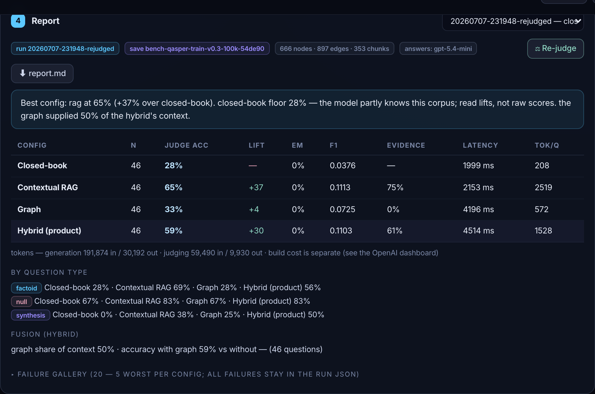

One run = the same 46 human-written questions asked through four memory configurations. Every number below has one job: separate what the memory adds from what the model already knew.

The main score. An independent judge model reads the question, the human gold answer (all annotators' variants) and our answer, and rules correct / incorrect. Judge = Gemini, a different family than the GPT answerer — it can't favor its own style.
The honest metric. Percentage points gained over the closed-book floor. The floor was 28% — the model partly knows this public corpus — so raw scores flatter; lift doesn't.
How many gold questions were asked in this configuration — here 46, written and answered by human researchers (QASPER).
Strictest check: the answer text is identical to a gold answer. Meaningful only for one-word answers.
Partial credit between EM and the judge: how many of the gold answer's words appear in ours (0–1). Useful as a tiebreaker, not as the verdict.
Did retrieval actually fetch the passage the human annotator marked as evidence? Measures the retriever, independent of answer quality.
Average time to answer one question, end to end. Graph and hybrid pay extra retrieval hops — visible here (2s → 4.5s).
Average tokens consumed per question — the cost proxy. RAG stuffs the most context (2,519); closed-book almost none (208).
The four arms: closed-book (no memory — the floor), contextual RAG (vectors), graph (knowledge graph), hybrid (both fused — the product default).
An auto-written honest reading of the table: names the best config, warns that the floor is high, and reminds you to read lifts, not raw scores. If too few answers were judged, it replaces itself with a reliability warning.
The same scores sliced by kind of question. factoid = short factual; synthesis = "explain how/why". This is where methods differentiate: RAG wins factoid (69%), hybrid wins synthesis (50%).
Trap questions that are unanswerable from the corpus. Scores here measure abstention — does the system say "not answerable" instead of inventing an answer? Memory helps honesty too: 67% → 83%.
Diagnostics of the merge: the graph supplied 50% of hybrid's context, and accuracy is compared on questions where graph facts were present vs absent — shows whether the graph is pulling its weight inside hybrid.
The 5 worst-scored failures per config — question, gold, our answer, and the judge's note. The starting point for error analysis; every failure stays in the run's JSON.
Provenance of the memory: the run id, the save name (the built graph is restorable on the graph page — 666 nodes · 897 edges · 353 chunks), and the answering model. Same build is reused run after run, never re-paid.
Total spend split by role: generation (writing 184 answers) vs judging (scoring them). Build cost is one-time and tracked separately.
Re-scores the stored answers with the current judge and gold — nothing is re-generated, so it costs cents. How this run was rescued after the free judge got rate-limited.
The downloadable deliverable: the same numbers as a finished, versioned markdown report with method explanations and manual "✎ TO COMPLETE" sections for the analyst's own reading.